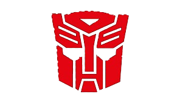
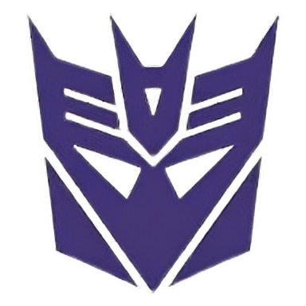
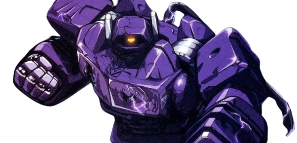

patpur.github.io
Autobots o Decepticons

Herramientas, automatización y hardware. Proyectos orientados a utilidad real.
2 proyectos →
Bajo nivel, ASM, binarios y C. Proyectos donde el hardware se toca de cerca.
3 proyectos →
Quién soy, qué uso y por qué lo hago. Perfil, habilidades y estadísticas.
patpuralu →